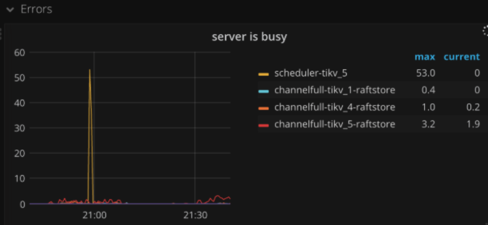
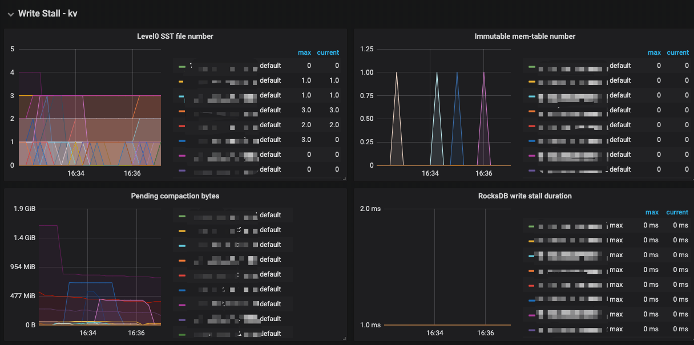
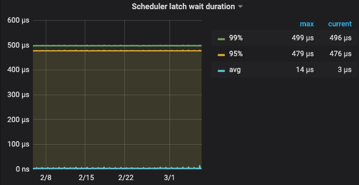

TiKV is busy 处理思路
日常 TiDB 运维中，当你在 TiKV 监控 Trouble - Shooting - Server Is Busy 看到以下这样的监控时，

可能此时的 TiDB 集群在该时间段内响应延时会大幅度增加，甚至会出现大量请求超时并且伴随大量告警出现。
Server is Busy 的影响
Server is Busy 本质上就是 tikv-server 繁忙，暂时无法对该请求做出响应，所以此时从TiDB集群到业务都会受到影响。以下从两个角度观察这个问题。
运维角度
- 集群性能迅速下降，现象可以从 TiDB 监控 - Query Summary - Duration 明显看到。
- TIKV 服务器负载增加，现象可以从 TiKV 监控 - Server / Thread CPU / Error 中看到。
- TiDB 日志中大量的 server is busy 日志，可以查看 tidb.log 过滤 Server is Busy 关键字。
- 慢查询大量增加，常规基于主键查询的请求，也会很慢。
业务角度
- 业务访问数据库响应耗时大幅度增加， 例如： 5ms -> 5s。
- 业务告警，数据库访问超时，例如： TimeoutException。
- 部分请求访问DB不响应。
每次出现 Server is Busy 对于运维以及业务都是比较紧张，那么接下来分析一下 Server is busy 的原因。
Server is Busy 的原因
写保护 ( write stall )
TiKV 底层有 2 个 RocksDB 作为存储, RocksDB 使用的 LSM Tree，LSM Tree 牺牲了一部分读的性能和增加了合并的开销，换取了高效的写性能，但如果写入过快，超过了 RocksDB 处理的极限，RocksDB 就会考虑对写入进行降速处理。
- 密集写入，导致 level0 sst 太多导致 stall 。
- pending compaction bytes 太多导致 stall ， 服务器磁盘IO能力在写入高峰跟不上写入。
- memtable 太多导致 stall 。

处理建议： 1. **是否存在热点写入/写入倾斜，是否可以打散写入 2. 调整 rocksdb 参数 max-sub-compactions 至 2~3，将 level0 到 level1 的 compaction 拆分为多个子任务，加快并行 compaction 的速度 3. 适当调大 level0-slowdown-writes-trigger = 40，level0-stop-writes-trigger = 56，这不一定能根本解决问题，只是加大了限制进行缓解**
scheduler too busy
- 写入冲突严重，两阶段提交时都需要申请 latch，如果冲突严重，latch 申请就会排队，导致 latch wait duration 比较高, 现象 TIKV 监控 - scheduler prewrite|commit 的 latch wait duration
scheduler prewrite - latch wait duration | scheduler commit latch wait duration
 
写入慢导致写入堆积，该 TiKV 正在写入的数据超过了 [storage] scheduler-pending-write-threshold = "100MB" 设置的阈值。
处理建议： 1. **是否可以将针对单行数据的并行写入，改为串行写入， 2. **可以考虑分布式锁， 3. **开启悲观事务。**
线程池排队
常规的线程池设计中，请求处理的越快，线程池压力越小，整体处理能力就越强。当单个请求变慢时，整个线程池也不受影响，当变慢的请求逐渐堆积时，整个线程池也会逐渐变得处理能力下降甚至不响应。超出线程池上限后会返回 Server Is Busy。
关键配置 tikv.yml
在 3.0 的版本中，不同的查询会在 2 套线程池中执行，分别是 readpool.storage 和 readpool.coprocessor，每个线程池分为三个优先级，分别用于处理高优先级，普通优先级和低优先级请求。 TiDB 点查选择是高优先级，范围扫描是普通优先级，而诸如表分析之类的后台作业是低优先级。
既然是使用线程池处理请求，接下来看下线程池的限制，线程数，以及单个线程允许积压的最大任务数量。
// 高优先级线程池, 默认值 cpu core 数 * 80%, 最小值 1
high-concurrency
// 普通优先级线程池, 默认值 cpu core 数 * 80%, 最小值 1
normal-concurrency
// 低优先级线程池, 默认值 cpu core 数 * 80%, 最小值 1
low-concurrency
// 指定低优先级线程池中每个线程的最大运行操作数，处理高优先级读取请求
// 默认值 2000, 最小值 2000
max-tasks-per-worker-high
// 指定低优先级线程池中每个线程的最大运行操作数，处理低普通先级读取请求
max-tasks-per-worker-normal
// 指定低优先级线程池中每个线程的最大运行操作数，处理低优先级读取请求
max-tasks-per-worker-low
其中以高优先线程池为例，因为调整线程资源的是线程池级别而不是单线程级别，所以高优先级线程池默认最大运行操作数的限制为
max-tasks-per-worker-high * high-concurrency = 2000 * 4 = 8000
推荐配置（针对** TiDB **集群）
- 单机单实例( TiKV )，不应超过服务器 CPU 核数
- 例如：一台 48 Core 服务器运行 1 个 tikv-server，则每个实例的高并发值应小于 48
- 最大性能推荐值：48
- 均衡性能推荐值：36
- 单机多实例(TIKV)，
- 例如：一台 48 Core 服务器运行 3 个 tikv-server，则每个实例的高并发值应小于 16
- 最大性能推荐值：16
- 均衡性能推荐值：12
- 4.0 的线程池整合
从 4.0 版本开始，将 readpool.storage 和 readpool.coprocessor 整合为一个 unified read pool 线程池，并且不再需要配置3 个优先级，解决资源分配不均的问题，并且大大提高了使用体验，相关配置：
[readpool]
# unify-read-pool = true
[readpool.unified]
# min-thread-count = 1
# max-thread-count = 8
## Size of the stack for each thread in the thread pool.
# stack-size = "10MB"
## Max running tasks of each worker, reject if exceeded.
# max-tasks-per-worker = 2000
处理建议： 1. 考虑是否出现大量扫描现象。 2. 考虑是否是可用线程较少，可以通过增加** TIKV **节点提高集群整体处理能力
raftstore is busy
- append log 遇到了 stall，监控在 2 个地方可以看到
- [tikv-detail]->[RocksDB - raft]-[Write stall duration]
- [tikv-detail]->[RocksDB - kv]-[Write stall duration]
- 以上也可以直接看 [tikv-detail]->[Errors]->[Server is busy]
- append log duration 比较高，导致处理消息不及时，监控在 [tikv-detail]->[Raft IO]->[append log duration]
- 考虑 append log 慢， 查看磁盘 IO 情况， 通常是写盘慢了，查看 [tikv-detail]->[Raft IO]->[Write duration]
- 考虑 [raftstore] store-pool-size 配置是否过小， 该值建议在[1,5] 之间，不建议太大。可以通过 [tikv-detail]->[Thread CPU]->[Raft store CPU] 看确定是否过小，如果[Raft store CPU] 超过了 [store-pool-size 数量] * 70% 说明需要加大 store-pool-size。
- 通常单个 tikv-server 实例的 region 数量超过 5 万之后，region 之间的心跳也会占用很多 raftstore cpu ，建议开启 hibernate region 来解决这个问题
处理建议： 考虑是否磁盘写入存在瓶颈 是否** **store-pool-size 配置是否过小，适当调整参数[raftstore] hibernate-regions = true
以上为 TiKV Server is busy 的主要的几个原因，在使用 TiDB 过程中需要尽力避免过程中出现 Server is Busy 的情况，可以通过优化 SQL 优化、参数调整、增加节点等手段避免该问题。
触发 Server is Busy 的常见场景
SQL** 开销较大**
- 常规慢查询, 有很多的场景，例如：全表扫描。
- 大表索引未被命中正确的索引的情况。
- 高并发导入数据，导致 tikv 写入繁忙。
处理建议： 针对开销较大的 SQL，如果是读 SQL可以做相应的 SQL 优化，来避免大量扫表。（4.0 的 unified thread pool 针对这种情况有优化）。高并发导入的问题可以降低导入并发。
事务冲突
乐观锁事务模式下事务冲突严重，会导致大量的线程进行重试，从而导致 tikv is busy，例如计数器功能。
处理建议： 针对**乐观锁事务模式下的事务**冲突的场景，可以通过添加分布式锁，或者使用悲观事务模型来解决。 TiDB v3.0.8默认使用悲观锁事务模式，如果集群是从 v3.0.8 版本以下升级上来的集群，默认还是乐观锁事务模式。
集群** region **数量太大
在 TiDB 2.1 等低版本中，因为 TiKV 的 raft 是单线程，当管理的 region 数达到一定量级时，性能会下降，多大一定程度，单核只够管理 region 。并没有空闲的能力处理业务。业务就会出现 server is busy。
处理建议： 1. 升级到 3.0 版本以上，设置 store-pool-size 开启多线程 raftstore 2. 设置 hibernate-regions ，开启静默 region
热点问题
- 如果业务写入集中在某一个 region 范围内，比如自增 id 的写入，这个 region 所在的 tikv-server 的压力会增大，导致线程处理变慢，线程会出现排队，最终导致 server is busy。
- 客户端在短期内发起密集的写入，其中主要是热点写入，可能出现写入倾斜，并导致单个 tikv 节点出现 server is busy。 处理建议： 对于热点更新的场景，可以通过 region 拆分、shard_row_id_bits、pre_split_regions 等方式优化。
常规查询变慢的原因
当 Server is Busy 出现后，查询为什么突然变慢，平时 99% 6ms 返回, 为啥突然 3s 都没有返回?
如果确认是在 Server is Busy 的情况下，Query Duration 明显增加，此时可以通过观察 tidb.log 日志，可以看到，正常查询主要耗时在 wait 阶段，并不是消耗在 exec 时间。
例如：
如果 coprocessor 的每个线程排队超过 2000 个任务，本次查询是第 2001 个任务，那么需要队列中任务任一个任务执行完成，后第 2001 才会开始执行，所以看似简单的查询会变慢，主要时间消耗在队列等待上面。
总结处理思路
通过前面的原因和场景，总结一下可能的处理思路及手段如下：
- 针对开销较大的 SQL，可以做出相应的 SQL 优化，来避免大量扫表。（4.0 的 unified thread pool 针对这种情况有优化）
- 针对事务冲突的场景，可以通过添加分布式锁，或者使用悲观事务模型来解决。
- 对于热点更新的场景，可以通过 region 拆分、shard_row_id_bits、pre_split_regions等方式优化。
- 如果是可用的线程较少，导致了线程池排队，可以增加 tikv 节点，来提高集群的处理能力。